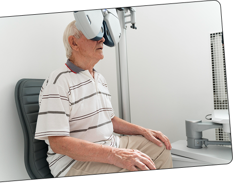
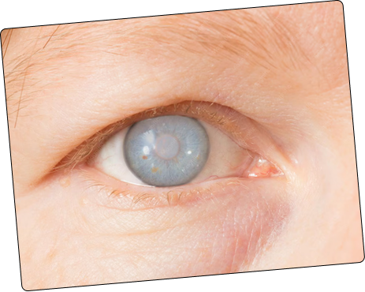
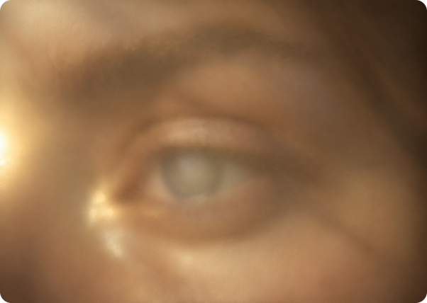
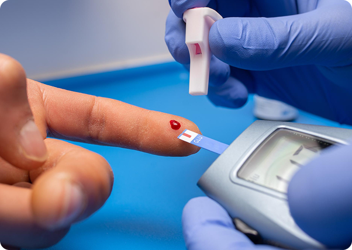
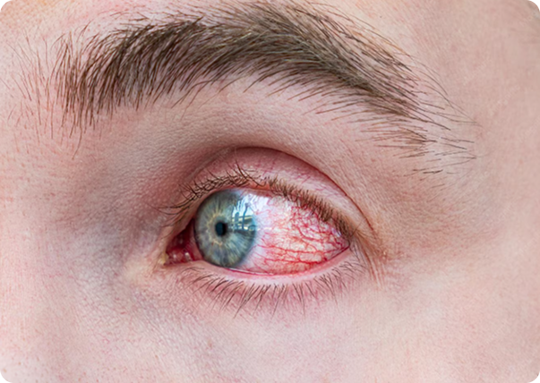
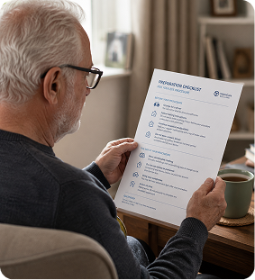
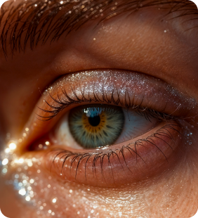
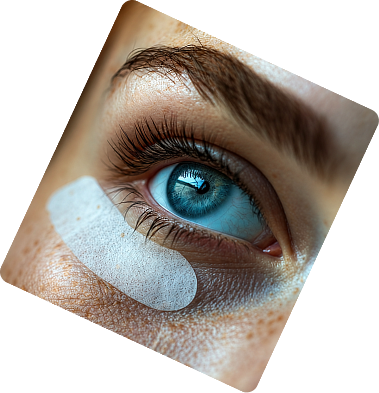

Everything looks hazy, as if seen through fog or frosted glass.
Our
Doctors
A team of eye specialists who’ve helped thousands see clearly again.
It’s a sign of cataracts – a clouding
of the eye’s lens that we treat by
replacing it, restoring clarity and
vivid color. See if the symptoms
sound familiar to you.


Inside every eye is a clear natural lens
that focuses light. Over time its proteins
clump together and the lens loses
transparency – light scatters instead of
passing through, so vision turns hazy.
IT’S NOT A FILM OVER
THE EYE. IT’S A CHANGE
INSIDE THE LENS ITSELF.
Everything looks hazy, as if seen through fog or frosted glass.

Colors lose their vividness and whites turn yellowish.
At night, headlights and lamps glare with rings of light around them.
Over the years, proteins in the lens clump together and cloud it.

High blood sugar speeds up the clouding of the lens.

A blow or injury to the eye can trigger a cataract even years later.
Let’s take a look at how the cataract treatment procedure is performed.
You come in, the doctor examines your eyes and listens to what’s bothering you. Together you decide whether surgery is needed – and you ask any question you have, without being rushed.
We run a full vision assessment on modern equipment, measuring your eye precisely so the artificial lens is matched exactly to you. It’s painless and doesn’t take long.
You get clear, simple instructions on how to prepare. Usually no special preparation is needed – no complicated restrictions.

Replacing the lens is quick and done under local anesthesia, so you feel no pain. The clouded lens is removed and a clear artificial one takes its place. You go home the same day.
Your vision starts to clear within the first few days. You’ll get eye drops and simple guidance for the healing period, and we stay in touch with follow-up check-ups.


Years of experience, thousands of patients,
and results we’re proud to show.
Years of
experience
Team
members
Happy
Client
Level of
satisfaction
A team of eye specialists who’ve helped thousands see clearly again.
8,951 clients have already rated us.
I’d been living with everything looking foggy for almost two years before I finally came to Fovea. Dr. Carter walked me through every step and never once made me feel rushed. The surgery itself took maybe fifeen minutes, and the next morning I could read the clock across the room again. I cried a little, honestly. Thank you.
Best decision I’ve made for my health in years. The colors came back. That’s the thing nobody tells you – you don’t realize how yellow and dull everything got until it’s fixed.
Life-changing. Simple as that.
Came in for the laser correction after wearing glasses for 30 years. The procedure went smoothly and the staff were friendly and reassuring. Took me a little while to adjust afterward, but I’d recommend them to anyone considering it.
We treat a full range of eye conditions, from laser correction to glaucoma and beyond.
A laser reshapes the cornea to correct nearsightedness, farsightedness, or astigmatism. The procedure takes about 15 minutes for both eyes, and most people are back to their routine the very next day.
Glaucoma quietly raises pressure inside the eye and damages the optic nerve before you notice anything. Catching it early lets us tailor treatment – drops, laser, or surgery – before real vision loss sets in.
An unevenly shaped cornea causes this blur, and it’s corrected with glasses, lenses, laser, or – if you’re also treating cataracts – a special lens fitted during that surgery.
One visit covers acuity, eye pressure, retina, and cornea on modern equipment, catching issues long before they’d affect your sight.
Screens, contact lenses, and age are the usual causes. We find yours specifically and match a treatment that actually brings the comfort back.
Fear often comes from myths. Here’s the truth behind the most common ones.
Cataracts can be cleared up with special eye drops or vitamins.
No drops or vitamins can clear the lens - only replacing it works.
You have to wait until a cataract is "ripe" before treating it.
That advice is outdated - it can be treated as soon as it bothers you.
A cataract is a film that grows over the eye and gets peeled off.
It isn’t a film - it’s the eye’s own lens clouding from the inside.
Cataract surgery is a dangerous and painful operation to go through.
It’s one of the safest procedures, done painlessly under local anesthesia.
Cataracts only ever happen to people who are already quite old.
Age is the main cause, but injury and diabetes can bring them earlier.